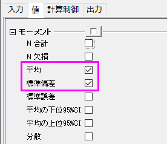
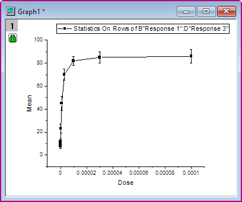
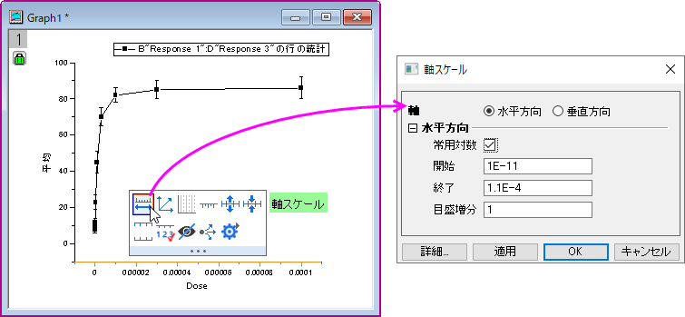
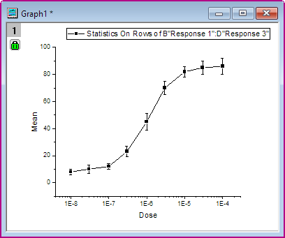
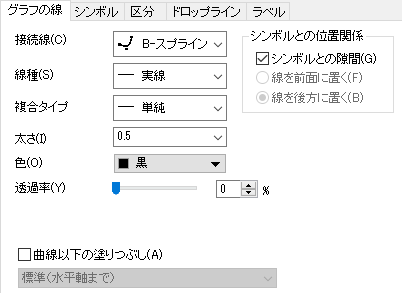
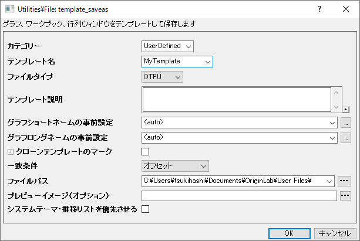
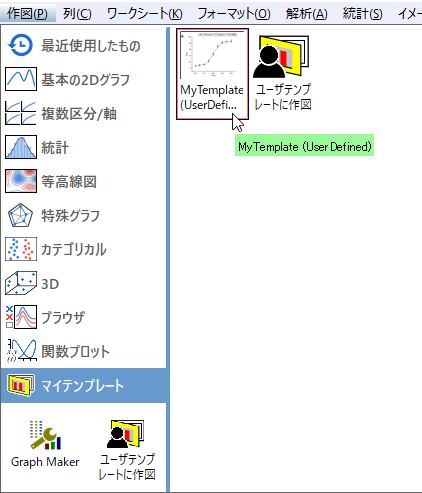
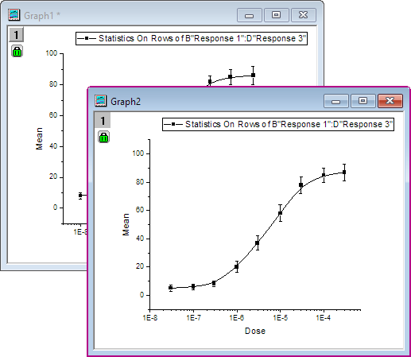

2Dグラフの基本
2DPlotting
概要
Originの2Dグラフは柔軟に編集が可能です。プロット属性、レイヤの配置を簡単に変更することができ、各レイヤに異なるデータセットを指定することができます。このチュートリアルでは、グラフ作成の基本操作を学習します。
学習する項目
このチュートリアルでは、以下の項目について解説します。
- 行の統計を実行する方法
- グラフを作成してグラフテンプレートとして保存
- 作成したテンプレートにプロットする
- 作図のセットアップダイアログの使用方法
ステップ
行の統計を実行
- 新しいワークブックを用意します。ヘルプ: フォルダを開く: サンプルフォルダを選択して、サンプルフォルダを開きます。このフォルダ内のCurve FittingサブフォルダにあるDose Response - No Inhibitor.dat ファイルを探します。空のワークシートにファイルをドラッグアンドドロップしてインポートします。
- 列２から4を選択して、メニューから統計：記述統計：行の統計を選択します。値のタブのモーメントブランチの平均と標準偏差のチェックボックスにチェックが付いていることを確認し、結果を出力します。

- OKボタンをクリックすると、2つの新しい列Mean(Y)と SD(yErr)が元のワークシートに追加されます。ここで、yErrは、エラー列であり、この列はエラーバーをプロットするのに使用することができます。
Note: プロットを簡単にするため、Originワークシートの各列にはXY属性があります。 列のプロット属性を変更するには、列を選択し、列メニューを選びます。 または、列を右クリックし、ショートカットメニューから「列XY属性の設定」を選びます。
グラフを作成して、テンプレートとして保存する方法
- Mean(Y)とSD(ｙEr-)の列を選択し、メニューから作図：Basic 2D：線+シンボル図と選んで作図します。

- X軸上でクリックし、ミニツールバーの軸スケールボタンを選択します。そのとき軸スケールダイアログの常用対数にチェックを付け、OKボタンをクリックします。

- メニューから「グラフ操作：再スケールして全てを表示」を選択し、グラフのXおよびY軸を再スケールします。:

- 曲線を編集するには、プロットシンボルをダブルクリックして、作図の詳細ダイアログボックスを開きます。 または、グラフ内で右クリックして、コンテキストメニューから作図の詳細(プロット)を選びます。 右側のパネルのグラフの線タブで、『接続線』をBスプラインにして、滑らかな曲線にします。

OKボタンをクリックして、ダイアログを閉じます。
- すべての編集を行い、グラフが完成したら、このグラフを使ってテンプレートを作成し、今後似たようなグラフを作成する時に利用します。「ファイル：テンプレートの新規保存 」を選択して、「テンプレートの保存」ダイアログを開きます。カテゴリードロップダウンリストで、User Definedを選択し、テンプレート名を入力します。この例では、MyTemplateとします。OK をクリックしてテンプレートを保存します。

「作図のセットアップ」でグラフテンプレートにプロットする
- 新規ワークブックボタンをクリックして新しいワークブックを開き、Samples\Curve Fitting\Dose Response - Inhibitor.dat をインポートします。上記で行ったのと同じ操作で、 行の統計を実行し、このワークシートの平均とSDを計算します。
- Mean(Y)とSD(ｙErｒ)の列を選択します。「作図：マイテンプレート：MyTemplate」を選択し、ユーザテンプレートを使って新しいグラフを作図します。

すると、以下のようになります。
